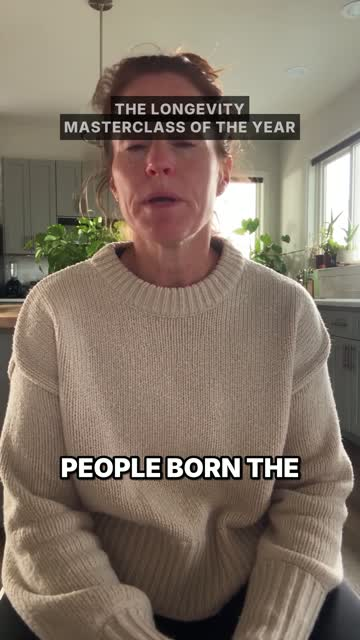
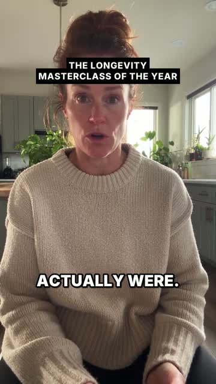
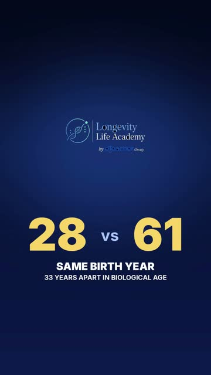
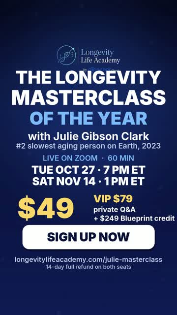
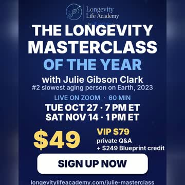
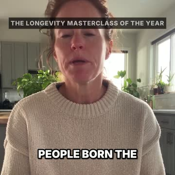
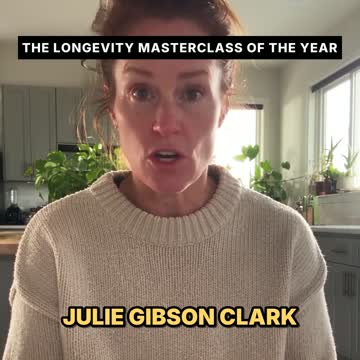
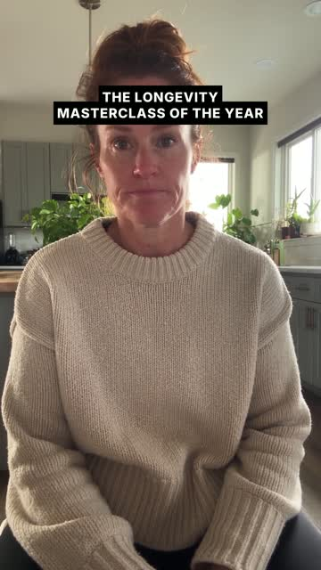
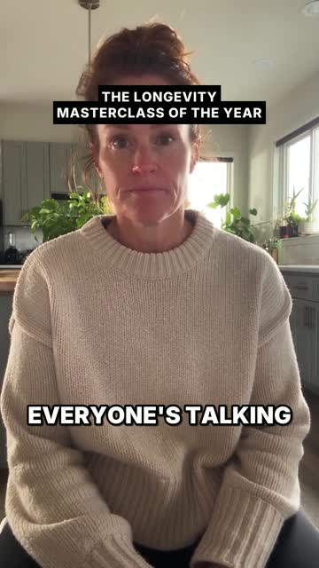

← Final versions
v11 Audit · every request, side by side
Each row: your words → what is in the delivered file → status. Frames are extracted from videos/ad4-woman46__9x16__75.mp4 at the timestamps shown; 1:1 shares the same cut. VERIFIED = checked by machine or frame in this build. ASSUMED = nothing left to check by machine; needs your ear/eye.
18 requests
17 verified
1 assumed (voice emotion = taste)
1 · Opener"THEY MUST START WITH THIS POWER CLAIM" — exact text given
Whisper transcript of the final file, 0–21 s:
"People born the same year can be 33 years apart in biological age. 954 38 year old New Zealanders were tested to measure how old their bodies actually were. The youngest in the room was 28. The oldest? 61. Same birth year, 33 years apart." — word-for-word match.



0.5 s · 12.0 s · 19.8 s (28 vs 61 stat card after "61")
Verified
2 · Strap"YOU NEED LONGEVITY MASTERCLASS OF THE YEAR TO APPEAR BEFORE"
"THE LONGEVITY MASTERCLASS OF THE YEAR" strap burned in from frame 0 (see every presenter frame above/below); full title card at 26.3 s before Julie is first named at 36 s.
26.8 s
Verified
3 · Who Julie is"CLARIFY WHO THE FUCK JULIE IS"
Presenter: "Julie Gibson Clark can." → cut to Julie herself, real film footage and real voice (36.9–42.5 s):
"I'm Julie Gibson Clark. For over a year I held the number two spot in the world for slowest aging." → presenter: "In 2023 she out-aged Bryan Johnson and his $2 million a year, on about $100 a month. Single mom, full-time job. Founding teacher at Longevity Life Academy."
34.0 s · 38.3 s
Verified
4 · Your footage, your cards"none of my footage, none of my cards" / "not allowed to use any cards that don't look exactly like Julie's cards"
Three cut-ins from Julie's film (julie-film-full.mp4): Julie on camera 62.9–68.45 s; the film's own "No. 2 — out of everyone measured" card (film 6.0–7.7 s) shown while she says "number two"; the film's press collage (film 9.55–12.0 s) during "In 2023…"; Julie's real outro (film 124.0–127.75 s) + orb sting. Zero third-party cards.
40.9 s · 43.5 s
Verified
5 · PR pop-up"ADD THAT PR THING OF HER IN THE VIDEO WHERE ALL ARTICLES POP UP"
The film's press collage (real articles) 42.6–46.8 s, timed to "In 2023 she out-aged Bryan Johnson". Frame at 43.5 s above.
Verified
6 · Zoom mockup"JULIE ON ZOOM WITH 50 PPL MOCKUP ANIMATED WITH POWER BEFORE ENDING FRAME"
"LIVE ON ZOOM" gallery (Julie as host, 50-tile grid, animated push-in) 56.7–59.5 s, on "live on Zoom for one hour"; music ramps up under it.
58.0 s · 9:16 and 1:1
Verified
7 · Offer / CTA"SIGN UP NOW AND MASTERCLASS REAL INFO, DATES AND PRODUCT… USE VERY LARGE FONTS"
End card 68.7–73.3 s: The Longevity Masterclass of the Year · with Julie Gibson Clark · Live on Zoom · 60 min · Tue Oct 27 7 PM ET / Sat Nov 14 1 PM ET · $49 · VIP $79 · SIGN UP NOW · longevitylifeacademy.com/julie-masterclass · 14-day refund. Facts match the live landing page.


72.0 s · 9:16 and 1:1
Verified
8 · Julie outro"the other intros, outros, and the other footages I asked from Julie's video"
Julie's real outro "I'm Julie, and welcome to Longevity Life Academy" 64.0–67.8 s, then her film's orb sting, then the offer card.
64.0 s · 67.8 s
Verified
9 · Captions"Everything has huge captions and bold… I WANT DIARY OF CEO TYPE OF CAPTIONS… very clear captions"
Inter Black, 2–3 words per card, gold keyword highlights, present on every speech frame (see all presenter frames). Machine alignment: 48/50 caption cards matched to word onsets, max drift 0.48 s (qc.json). Captions suppressed under full-frame cards so nothing overlaps.
Verified
10 · Length"I only want the 75-second version… the length of the ad is set by what I ask"
73.3 s (≤ 75 s). Both files identical cut. ffprobe: 1080×1920 and 1080×1080, 24 fps, H.264 High, AAC 48 kHz.
Verified
11 · Formats"In vertical and in square formats"
9:16 and 1:1 delivered; 1:1 re-laid (presenter re-framed, zoom card without date line to avoid clipping).


1:1 at 0.5 s · 36.2 s
Verified
12 · Accent"THEY DONT HAVE AMERICAN ACCENT HERE!!!! THEYRE AUSTRALIAN"
Machine check run 2026-10-01 with the CommonAccent ECAPA classifier (16 English accents, SpeechBrain, Jzuluaga/accent-id-commonaccent_ecapa):
• Part 1 (final take) → us (then canada, australia)
• Part 2 (continuation) → us (then canada, indian)
• Control: the take you rejected as Australian → australia (then newzealand) — the classifier agrees with your ear
• Control: Julie's real voice → us
Confidence margins are modest (top class ≈ 0.10 vs 0.08 on a 16-way softmax), so this is a ranking check, not a certificate. Both final takes were generated with an explicit "General American, Ohio, NOT Australian" voice spec.
Verified (classifier + control)
13 · Framing"Zoom the fuck out… their face isn't glued to the camera"
Medium-wide: head-room above hair, shoulders, torso and hands in frame, kitchen context visible (all presenter frames). Part 1 → Part 2 is a Seedance Extend of the same take: frame at 29.7 s and 30.2 s are continuous — no jump cut.


29.7 s · 30.2 s (the seam)
Verified
14 · Music"no elevator bullshit music, but something… upbeat for like an online event of the year… culmination of music"
Track "Exhilarate" (upbeat, driving). Volume curve: 0.16 under presenter → 0.10 under Julie's own voice → ramps to 0.34 from 2.5 s before the Zoom section → full under the offer card → 1.2 s fade. Integrated loudness −14.0 LUFS, true peak −2.4 dBTP (ebur128). Licence: Kevin MacLeod, incompetech.com, CC BY 4.0 — credit line required if published, or swap for a track you own.
waveform of the final mix: speech bed, swell at 54 s, climax to the end
Verified
15 · Scene consistency"MAINTAIN PERFECT SCENE CONSISTENCY… all transitions and scene consistencies perfect"
One presenter, one sweater, one kitchen, one lighting across both takes (frame tile in qc). Cuts to Julie are hard cuts at 24 fps; strap persists over presenter and Julie; hidden under full-frame cards.
Verified
16 · Human, non-robotic delivery"the people sound exactly like robots… They speak perfectly human in context with emotion"
Prompted: natural breaths, impressed tone about Julie, decisive last line, 165 wpm; measured speech rate ≈ 160 wpm. Whether it feels human is your judgement — I cannot score emotion.
Assumed
17 · Delivery"ON A GITHUB OPEN LINK WITH THE VIDEOS EMBEDDED… DOWNLOAD BUTTONS AND AUTOPLAY WITH SOUND… UPLOAD TO THE GITHUB CALLED FINAL VERSIONS"
Verified
18 · Audit"U MUST AUDIT AND WATCH THE END RESULTS… Every single thing, I want to see that I audited, that I asked for."
This page. Frame tiles (every 2 s) in qc; transcript, loudness, caption alignment, accent classifier, format probe all in
qc.json.
Verified